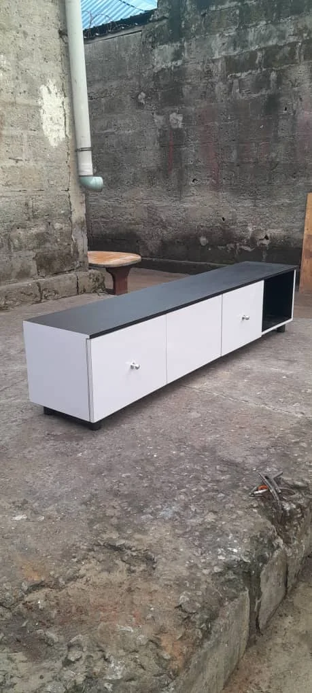
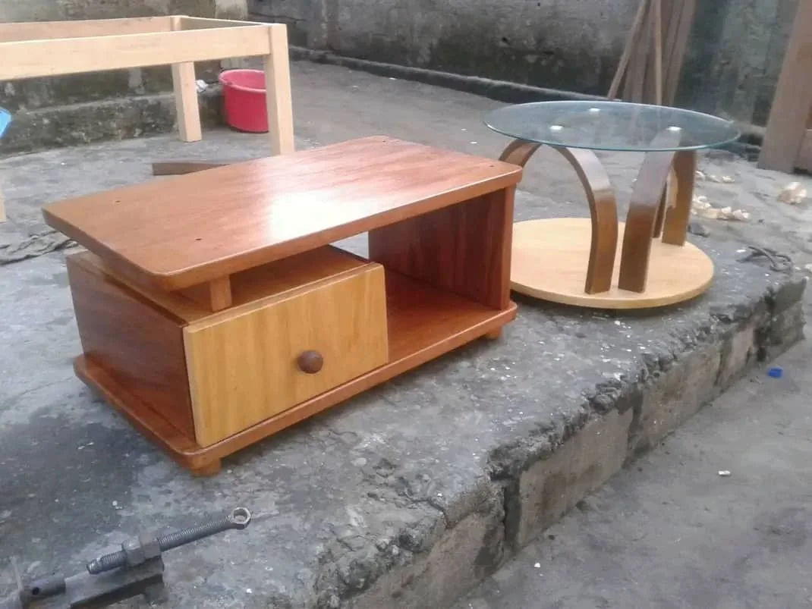

Trente effets, vos vraies photos
Passez la souris sur les images, et faites défiler lentement : certains effets se déclenchent au scroll. Repérez ceux que vous préférez et donnez-moi leurs numéros — je les applique au site. Tout est en CSS et JavaScript natifs : aucun coût, aucune dépendance, rien à installer.
Parallaxe 3D
L'image glisse dans son cadre en suivant votre curseur, comme si le meuble avait de la profondeur. Discret et haut de gamme.


Expansion
La photo survolée s'élargit, les voisines se rétractent. Met une pièce en vedette sans quitter la page.




Révélation de légende
La photo occupe tout le cadre ; le nom de la pièce remonte par-dessus au survol. Laisse le meuble parler en premier.
Vitre & halo doré
Un reflet suit le curseur sur la carte et un liseré doré tourne autour du cadre. L'effet actuellement sur la catégorie Salon.

Coverflow 3D
Les photos sont inclinées en enfilade ; celle que vous survolez se redresse et avance vers vous. Spectaculaire pour une sélection de pièces.
Retournement
La carte pivote et montre son verso : nom, finition, et invitation à vous contacter. Pratique pour donner un détail sans surcharger la photo.
Lightbox — cliquer pour agrandir
Cliquez sur une photo : elle s'ouvre en grand, plein écran, avec les flèches pour passer d'une pièce à l'autre. C'est ce qui permet à un client d'examiner le travail du bois en détail avant de vous appeler.
Parallaxe au défilement
Les colonnes défilent à des vitesses légèrement différentes : la grille respire pendant que vous scrollez. Faites défiler la page pour voir l'effet.
Volet qui se réduit
La photo remplit toute la carte, puis se réduit vers le haut au survol pour laisser apparaître le descriptif. Élégant et lisible.
Titre révélé mot à mot
Chaque mot du titre monte depuis un masque, l'un après l'autre. Pour les en-têtes de vos catégories — donne tout de suite une impression de soin.
Chaque meuble est pensé pour durer, façonné à la main dans l'atelier de Kinshasa.
Image qui se déploie
La photo arrive étroite aux bords très arrondis, puis s'élargit sur toute la largeur en se dézoomant. Idéal pour présenter une réalisation phare.
Projecteur au curseur
Promenez la souris sur le bloc : votre curseur agit comme une lampe qui découvre la photo par-dessous. Effet fort pour une bannière « sur mesure ».
Découpe verticale
Le texte se dévoile ligne par ligne par un volet qui s'ouvre vers le bas, suivi d'un filet qui se trace. Sobre, net, typographique.
Comparateur avant / après
Tirez la poignée : à gauche l'atelier, à droite le meuble installé. C'est l'effet qui montre le mieux votre travail — le client voit le chemin parcouru.

Bande défilante
Les photos défilent en boucle sans fin. Idéal pour montrer beaucoup de pièces sans prendre de place. Le défilement s'arrête quand la souris se pose dessus.


Loupe sur le grain du bois
Le curseur devient une loupe. Le client peut examiner la finition et le veinage de près, comme s'il était devant le meuble. Très convaincant sur une belle essence.

Empilement au défilement
Chaque photo se cale sous la précédente et s'empile comme un jeu de cartes. Donne du rythme à une page longue. Faites défiler lentement.


Rail horizontal
Une rangée qui se fait glisser à la souris ou au doigt, sans bouton. Parfait pour une catégorie entière sur téléphone.


Zoom lent continu (Ken Burns)
L'image respire toute seule, sans rien faire : un zoom très lent qui va et vient. Donne vie à une photo fixe, comme au cinéma.

Inclinaison 3D
La carte entière s'incline vers le curseur, avec un reflet qui suit. Plus marqué que la parallaxe du n° 1 : c'est l'objet qui bouge, pas l'image.


Rideau qui se lève
Un volet sombre se lève sur chaque photo, l'une après l'autre, quand la section arrive à l'écran. Solennel, comme un dévoilement.


Compteur animé
Les chiffres montent depuis zéro quand la section apparaît. Pour les repères qui rassurent : années de métier, pièces livrées, délai moyen.
Bouton magnétique
Le bouton vient à la rencontre du curseur, comme attiré. Approchez-vous sans cliquer. Fait beaucoup pour un bouton « Demander un devis ».
Bichromie au survol
Les photos s'affichent teintées dans vos couleurs — cuivre et brun — et reprennent leurs vraies couleurs au survol. Unifie un catalogue dont les photos ont des lumières très différentes.


Révélation en mosaïque
La photo se découvre par petits carrés, en vague diagonale. Un peu spectaculaire — à réserver à une section mise en avant.


Machine à écrire
Une phrase s'écrit, s'efface et laisse place à la suivante, en boucle. Pour annoncer tout ce que vous fabriquez sans faire une liste.
Lamelles qui s'ouvrent
La photo est masquée par des lamelles verticales, comme un store, qui s'ouvrent au survol. Net et mécanique — un clin d'œil au travail du bois.


Bandeau de texte défilant
Une ligne de mots qui traverse la page sans fin. Se pose entre deux sections pour rappeler ce que vous faites, sans occuper d'espace.
Dézoom au défilement
L'image arrive très rapprochée et s'ouvre peu à peu à mesure que vous descendez. Excellent pour une grande photo en pleine largeur.

Apparition en cascade
Les cartes montent une à une quand la grille arrive à l'écran. Le plus sobre de tous — c'est celui qui vieillit le mieux sur un catalogue entier.